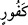
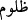

Kazâ-i ilâhî gemiyi nereye isterse oraya götürür
Toprağında ihlâs ve samîmiyet kökü olmazsa,
Bu kapıda senden daha mahrum kimse bulunmaz.
Selâmet, amellerin ihlâs ve samîmiyetle yapılmasındadır.
İki yüzlülerin kayığı mutlaka batacaktır.
“Zaten bizim âyetlerimizi,” bizim kudretimizin nişanlarını “ancak nankör hâinler,”
verdikleri sözü fazlasıyla bozanlar, Allah Teâlâ’nın nîmetlerine nankörlükte ileri
gidenler “bilerek inkâr eder.”
“
” fıtrî ahdi bozmak veya denizde olanları reddetmektir. “
”, gadrin en kötüsü
ve en çirkinidir. “
” lafzı “
”da olduğu gibi bir şeyi âdet hâline getiren kimse için
kullanılır. Burada inkârcı, kendisinde bulunan en kötü hasletler olduğu için iki kötü
vasıfla sıfatlanmıştır. Rasûlullah (s.a.) sözünde durmamayı münafıklığın alâmetlerinden
birisi olarak saymıştır.[102] Hz. Ali (r.a.) ise şöyle der: “Hıyânet ehline vefâ Allah
katında hıyânettir. Hıyânet ehline hıyânet, vefâdır. Tıpkı büyüklenene büyüklenmek
sadaka olduğu gibi.”
Şu halde akıllıya gereken ahde vefâ göstermektir. Bu ise, Allah Teâlâ’nın “Ben sizin
Rabbiniz değil miyim?” buyruğuna “Evet, sen bizim Rabbimizsin!” (el-A‘râf, 7/172)
sözüyle rubûbiyeti ikrar sırasında yapılan ahdin gereğini yerine getirerek
sorumluluğundan kurtulmaktır. Ahde vefa, avamdan olanlar için, müjdelere sevinip
uyarılardan korkarak kulluk yapmaktır. Havas için ilâhî emirleri başka bir maksadla
değil sırf Allâh’ın emri olduğu için yerine getirmektir. Bazen insana nisyan ârız olup
ahdini unutabilir. Fakat o, bulunduğu makama göre belalara mâruz kalır.
Hikâye edilir ki Şeyh Ebü’l-Hayr el-Akta‘a, elinin kesilme sebebi soruldu. Şöyle
anlattı: “İnsanların sofralarından arta kalanlardan geçiniyordum. Hatırıma bunu terk
edip Allâh’a tevekkül etmek geldi. Bir daha insanların yemeğinden ve yerde biten
hububattan yemeyeceğime söz verdim. Elli güne yakın zaman geçti, Allah Teâlâ bana bir
azık kapısı açmadı. Öyle ki kuvvetim azaldı, zafiyetim arttı. Sonra iki yuvarlak ekmekle
bir miktar katık lütfetti. Derken insanların arasından ayrılıp bir mağaraya çekildim. Bir
gün mağaradan çıktım. Bir kısım meyveler gördüm. Onlardan bir miktar alıp ağzıma
götürdüğüm sırada verdiğim söz aklıma geldi. Derhal onları yere atıp mağaraya
döndüm. Bu esnâda bazı hırsızlar ve yol kesiciler yakalandı ve o beldenin valisi
huzurunda elleri ve ayakları kesildi. Beni de yakaladılar ve “Sen de onlardansın”
dediler. Emîrin huzuruna götürüp elimi kestiler. Ayağımı kesmek istediklerinde Allah
Teâlâ’ya tazarru edip: “Elim günah işledi, kesildi. Peki ayağımın günahı nedir?” diye
yalvardım. Tam o sırada beni tanıyan bir şahıs emîrin yanına gelip benim durumum
hakkında ona bilgi verdi. Emîr beni affetti, hatta açıkça özür diledi.”
İşte Allah ile beraber olan ricâlin hâli budur. Zâhiren ve bâtınen ahdi korumaya gayret
etmelidir.